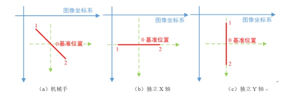
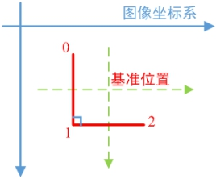
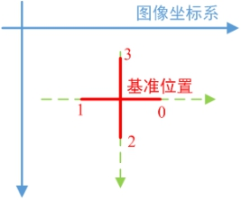

Tính toán Hiệu chuẩn liên kết (Relative Calibration)
Chức năng
Công cụ này được sử dụng để tính toán hiệu chuẩn liên kết. Trong quá trình hiệu chuẩn liên kết, trước tiên ta đã biết kết quả hiệu chuẩn (Calibration result) của camera tham chiếu. Sau đó, thông qua chuyển động hiệu chuẩn liên kết giữa camera tham chiếu và camera mục tiêu (vị trí trục được tính toán bởi công cụ lấy vị trí trục hiệu chuẩn liên kết), ta thu được tọa độ hình ảnh (vector) của các điểm định vị tương ứng dưới camera tham chiếu và tọa độ hình ảnh (vector) của các điểm định vị dưới camera cần hiệu chuẩn. Cuối cùng, công cụ này được sử dụng để thực hiện tính toán hiệu chuẩn liên kết.
Tham số
| Phân loại |
Tên tham số |
Mô tả tham số |
| Cửa sổ thuộc tính |
Loại hiệu chuẩn liên kết |
Hiệu chuẩn liên kết đơn điểm Image-to-Platform: Chuyển động hiệu chuẩn liên kết một lần, chỉ có một nhóm điểm liên kết, chỉ có thể xác định quan hệ tịnh tiến (Translation) giữa hệ tọa độ hình ảnh mục tiêu và hệ tọa độ nền tảng (Platform), tức là tọa độ nền tảng; quan hệ xoay (Rotation) và tỷ lệ (Scaling) cần được thu thập bằng các phương thức khác.
Hiệu chuẩn liên kết đa điểm Image-to-Platform: Chuyển động hiệu chuẩn liên kết nhiều lần, có nhiều nhóm điểm liên kết, có thể xác định quan hệ chuyển đổi giữa hệ tọa độ hình ảnh mục tiêu và hệ tọa độ nền tảng, bao gồm các quan hệ xoay, tỷ lệ và tịnh tiến.
Hiệu chuẩn liên kết đa điểm Image-to-Image: Chuyển động liên kết nhiều lần, có nhiều nhóm điểm liên kết nhưng không có kết quả hiệu chuẩn tham chiếu, trực tiếp tính toán quan hệ ánh xạ (Mapping) giữa hình ảnh với hình ảnh. |
| Cửa sổ hình ảnh |
Không |
Không |
| Chuỗi dữ liệu |
Tọa độ hình ảnh tham chiếu (Vector) |
Vector cấu thành từ tọa độ hình ảnh của các điểm đặc trưng được định vị bởi camera tham chiếu sau mỗi lần chuyển động hiệu chuẩn liên kết. Khi loại tính toán hiệu chuẩn là hiệu chuẩn liên kết đơn điểm, chỉ cần nhập một tọa độ hình ảnh tham chiếu duy nhất. |
|
Tọa độ hình ảnh (Vector) |
Vector cấu thành từ tọa độ hình ảnh của các điểm đặc trưng được định vị bởi camera mục tiêu sau mỗi lần chuyển động hiệu chuẩn liên kết. Khi loại tính toán hiệu chuẩn là hiệu chuẩn liên kết đơn điểm, chỉ cần nhập một tọa độ hình ảnh duy nhất. |
|
Kết quả hiệu chuẩn tham chiếu |
Kết quả hiệu chuẩn của camera tham chiếu, kết quả này thường được thu được từ chuyển động hiệu chuẩn tiêu chuẩn và tính toán hiệu chuẩn tiêu chuẩn. Khi loại tính toán hiệu chuẩn là hiệu chuẩn liên kết đa điểm Image-to-Image, không cần nhập mục này. |
| Giao diện nâng cao |
Không |
Không |
Đầu ra (Output)
| Phân loại |
Tên tham số |
Mô tả tham số |
| Cửa sổ thuộc tính |
Kết quả hiệu chuẩn |
Xuất kết quả hiệu chuẩn tương ứng của camera mục tiêu. |
|
Kết quả thực thi |
Kết quả thực thi của công cụ. |
|
Thời gian thực thi |
Thời gian thực thi của công cụ. |
|
Cửa sổ hình ảnh |
Không |
| Chuỗi dữ liệu |
Kết quả hiệu chuẩn |
Xuất kết quả hiệu chuẩn tương ứng của camera mục tiêu để các công cụ tiếp theo sử dụng, tương tự như tham số trong cửa sổ giám sát. |
Mô tả chi tiết
Vector tọa độ hình ảnh tham chiếu và Vector tọa độ hình ảnh
Trong chuyển động hiệu chuẩn liên kết, các loại trục khác nhau sẽ có các điểm liên kết khác nhau và số lần chuyển đổi chuyển động ngược (Reverse motion transfer) tương ứng cũng khác nhau. Đối với các nền tảng đơn trục như trục X hoặc Y độc lập, phương pháp này phù hợp để thực hiện hiệu chuẩn liên kết hai điểm; đối với nền tảng XYD (XY-Theta), có thể thực hiện hiệu chuẩn liên kết hai điểm, ba điểm hoặc bốn điểm. Tương ứng với các bước hiệu chuẩn liên kết khác nhau, thứ tự tọa độ trong Vector tọa độ hình ảnh tham chiếu và Vector tọa độ hình ảnh đầu vào phải nhất quán với quỹ đạo di chuyển của chuyển động hiệu chuẩn liên kết tương ứng. Chi tiết như sau:
1. Hiệu chuẩn liên kết hai điểm: Robot thực hiện hai lần chuyển động dịch chuyển, áp dụng cho cánh tay robot và các nền tảng đơn trục như trục X hoặc Y độc lập. Quỹ đạo chuyển động dịch chuyển của hiệu chuẩn liên kết hai điểm được thể hiện trong Hình 2.

Hình 2 Quỹ đạo chuyển động dịch chuyển hiệu chuẩn liên kết hai điểm
Bảng 1 là danh sách vị trí tương ứng với Hình 2, trong đó X0 và Y0 là các vị trí chụp ảnh được thiết lập trước của robot (tức là vị trí gốc/vị trí cơ sở), DX và DY là bước dịch chuyển đơn vị của robot theo hướng X và Y. Tại thời điểm này, thứ tự nhập vector tọa độ cho công cụ tính toán hiệu chuẩn liên kết là Tọa độ 0 → Tọa độ 1.
Bảng 1 Danh sách vị trí hiệu chuẩn liên kết hai điểm trên nền tảng đơn trục
| Chỉ mục |
Vị trí |
Tọa độ trục XY |
Tọa độ trục X |
Tọa độ trục Y |
| 0 |
Hướng âm của vị trí cơ sở |
(X0 - DX, Y0 - DY) |
X0 - DX |
Y0 - DY |
| 1 |
Hướng dương của vị trí cơ sở |
(X0 + DX, Y0 + DY) |
X0 + DX |
Y0 + DY |
2. Hiệu chuẩn liên kết ba điểm: Robot thực hiện ba lần chuyển động dịch chuyển, quỹ đạo chuyển động dịch chuyển được thể hiện trong Hình 3.

Hình 3 Quỹ đạo chuyển động dịch chuyển hiệu chuẩn liên kết ba điểm
Bảng 2 là danh sách vị trí tương ứng với Hình 3, trong đó X0 và Y0 là các vị trí chụp ảnh được thiết lập trước của robot (vị trí cơ sở), DX và DY là bước dịch chuyển đơn vị của robot theo hướng X và Y. Tại thời điểm này, thứ tự nhập vector tọa độ cho công cụ tính toán hiệu chuẩn liên kết là Tọa độ 0 → Tọa độ 1 → Tọa độ 2, và ba tọa độ này nên cố gắng đáp ứng quan hệ vuông góc.
Bảng 2 Danh sách vị trí hiệu chuẩn liên kết ba điểm
| Chỉ mục |
Vị trí |
Tọa độ trục XY |
| 0 |
Phía trên bên trái vị trí cơ sở |
(X0 - DX, Y0 - DY) |
| 1 |
Phía dưới bên trái vị trí cơ sở |
(X0 - DX, Y0 + DY) |
| 2 |
Phía dưới bên phải vị trí cơ sở |
(X0 + DX, Y0 + DY) |
3. Hiệu chuẩn liên kết bốn điểm: Robot thực hiện bốn lần chuyển động dịch chuyển, quỹ đạo chuyển động dịch chuyển được thể hiện trong Hình 4.

Hình 4 Quỹ đạo chuyển động dịch chuyển hiệu chuẩn liên kết bốn điểm
Bảng 3 là danh sách vị trí tương ứng với Hình 4, trong đó X0 và Y0 là các vị trí chụp ảnh được thiết lập trước của robot (vị trí cơ sở), DX và DY là bước dịch chuyển đơn vị của robot theo hướng X và Y. Tại thời điểm này, thứ tự nhập vector tọa độ cho công cụ tính toán hiệu chuẩn liên kết là Tọa độ 0 → Tọa độ 1 → Tọa độ 2 → Tọa độ 3, lúc này quỹ đạo 0 → 1 và quỹ đạo 2 → 3 nên cố gắng đáp ứng quan hệ giao nhau vuông góc.
Bảng 3 Danh sách vị trí hiệu chuẩn liên kết bốn điểm
| Chỉ mục |
Vị trí |
Tọa độ trục XY |
| 0 |
Bên phải vị trí cơ sở |
(X0 + DX, Y0) |
| 1 |
Bên trái vị trí cơ sở |
(X0 - DX, Y0) |
| 2 |
Phía dưới vị trí cơ sở |
(X0 , Y0 + DY) |
| 3 |
Phía trên vị trí cơ sở |
(X0 , Y0 - DY) |
Trong thực tế dự án, hiệu chuẩn liên kết có thể được mô phỏng bằng cách di chuyển robot một lần và đồng thời định vị nhiều điểm đặc trưng để thay thế cho số bước hiệu chuẩn tương ứng. Tuy nhiên, thứ tự vector tọa độ đầu vào cho tính toán hiệu chuẩn liên kết 3 điểm hoặc 4 điểm vẫn phải nhất quán với thứ tự đã nêu trong phần mô tả chi tiết. Cụ thể: đối với tính toán hiệu chuẩn liên kết 3 điểm, cố gắng để 3 điểm tạo thành một góc vuông và điểm thứ hai là đỉnh góc vuông; đối với tính toán hiệu chuẩn liên kết 4 điểm, quỹ đạo 0 → 1 và quỹ đạo 2 → 3 của 4 điểm đầu vào nên cố gắng đáp ứng quan hệ giao nhau vuông góc.
Lưu ý
- Kết quả hiệu chuẩn của camera tham chiếu thường thu được từ việc thực hiện chuyển động hiệu chuẩn tiêu chuẩn và tính toán hiệu chuẩn tiêu chuẩn dưới camera tham chiếu. Do đó, trong các dự án hiệu chuẩn liên kết, thông thường nên thực hiện hiệu chuẩn tiêu chuẩn cho camera tham chiếu trước, sau đó mới thực hiện hiệu chuẩn liên kết cho camera mục tiêu.
Dự án mẫu (Example Project)
参见“\Samples\XY轴4步关联标定+对位计算.gvp”。